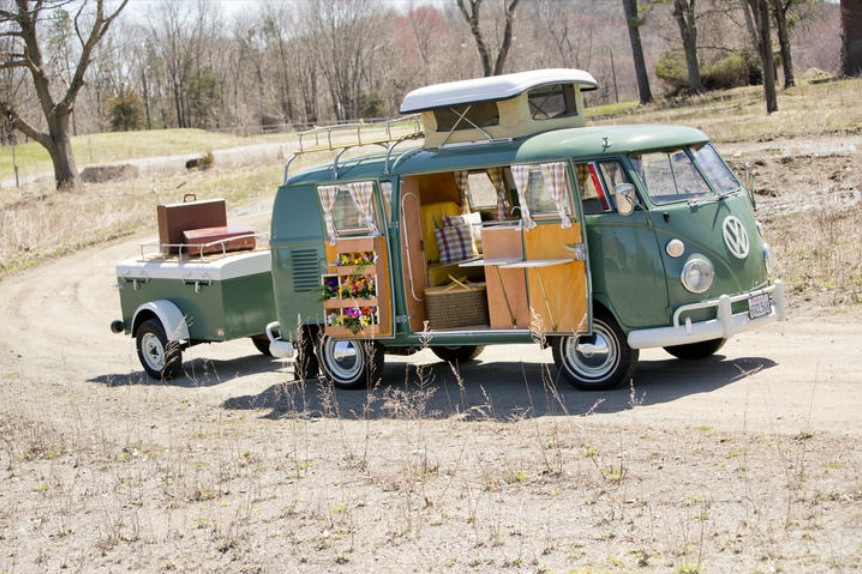
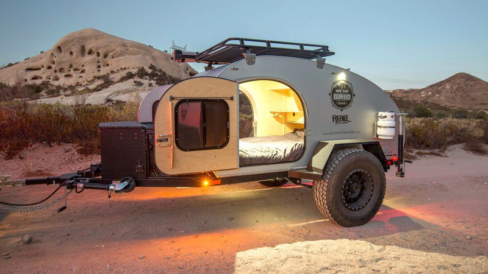
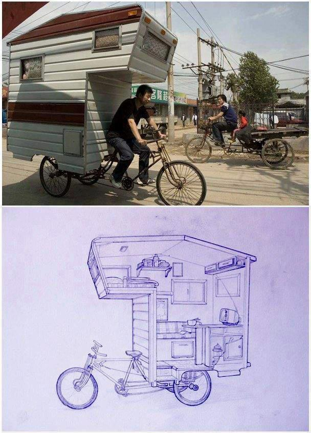

My name is Ariana Belen. I first discovered tiny homes when I was watching television and came across Tiny House Nation. Tiny House Nation
is a show with the builder, Zack, and the person who helps the future tiny housers prepare for living in a tiny home. This show opened my
eyes and showed me that if I went in this direction that I wouldn't need to worry about paying for a big house, because I would have this
tiny house.
I have always really been interested in helping the environment and making sure that we all have a small footprint on the earth. Tiny homes
have a smaller global footprint. Another thing that really drew me to tiny homes was the flexibilty. I have moved a lot of times in my
lifetime and left my home behind. But with tiny homes, you can bring your home with you. You will never have to leave your home behind
again (unless you decide to sell it).
I plan to begin building my tiny home very soon. So that I can live in it when I am in college. I plan to experiment living in different places
that aren't necessarily tiny homes but are relatively tiny. For example, a westfalia camper van, a tear drop trailer, a little place that you
can pull with your bicycle, etc. I have always been drawn to small spaces but now I'm going to be living in them.
Westfalia Camper Van:

Tear Drop Trailer:

Bicycle Home:

I came up with the idea of making this website to show people that tiny really is the way to go. For the people that don't think that they
could go tiny, you can. It just comes down to how much stuff you really need. This website ties in the environment and tiny homes. It also shows
the benefits of living in tiny homes.
Below you can contact me through email and email me any questions or comments that you have.